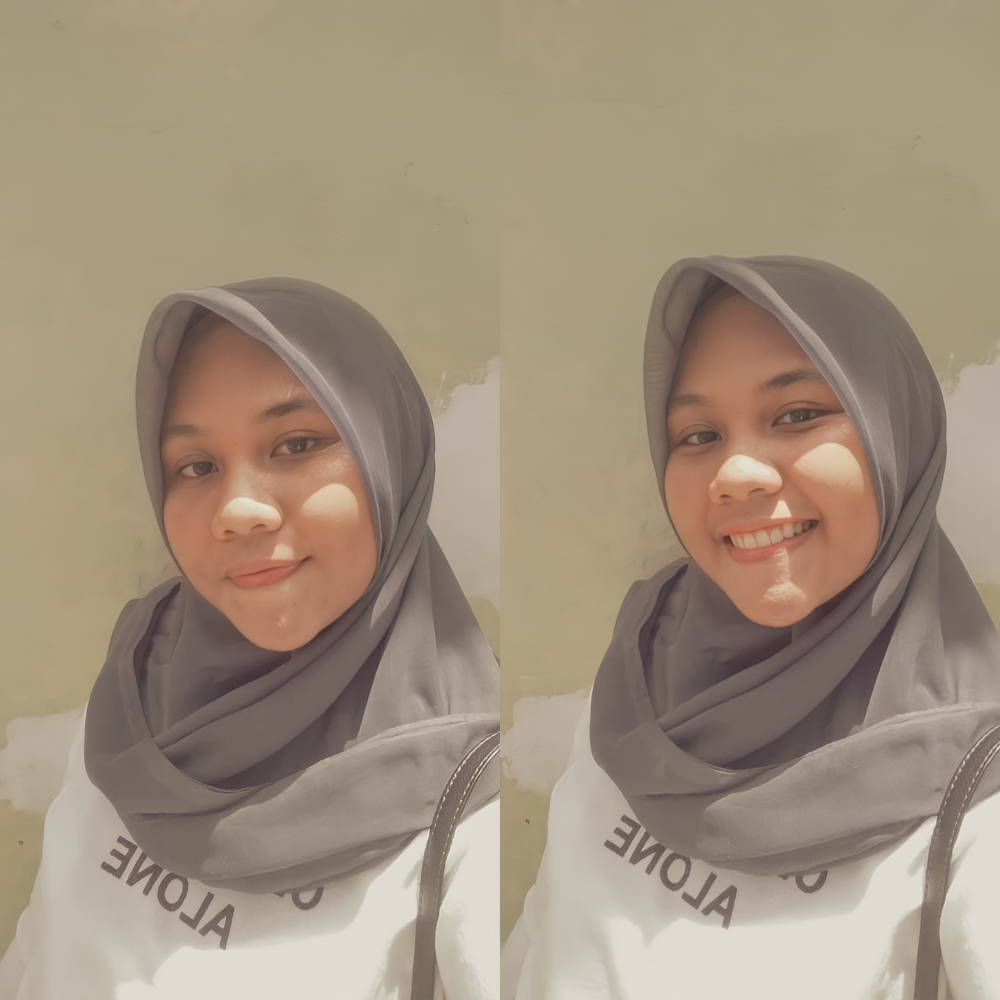

My Personal Information
Hello,
My name is Salsabilla Adisty, you can call me Billa. I am 19 years old. I was born in Bengkulu on March 31th 2002. I live in Padat Karya street Perumahan Prima Bentiring Estate number 31 Muara Bangkahulu Bengkulu City. Im graduated from Junior Hight School Number one and Senior Hight School Number Five Bengkulu city. Im the first child of two siblings in my family. During the holidays in second semester attended training from dicoding and got a Machine learning and Cloud Aws certificate. my goals in future can be a web developer I am studying at the University the third semester of Bengkulu majoring in Informatics Engineering. My hobbies are watching korean dramas, singing, and when i feel boring i also like reading Wattpad with the theme of romance. My favorite food is meatball
Whatever you are, be a good one